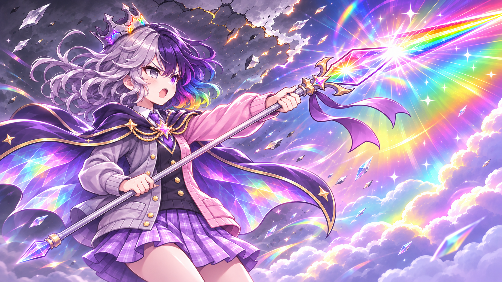
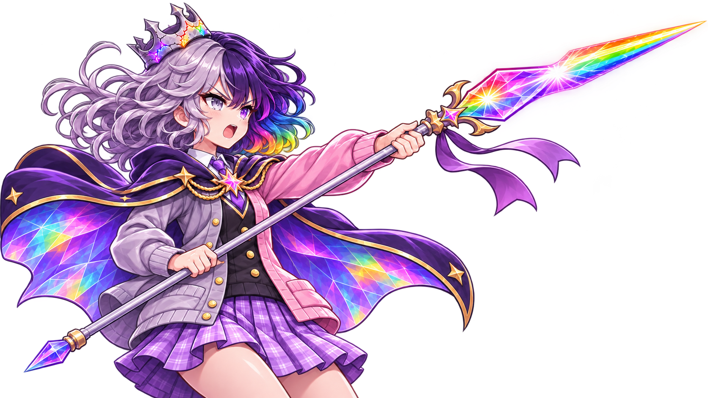
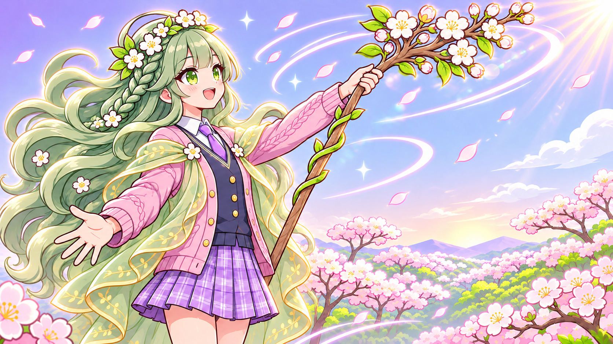
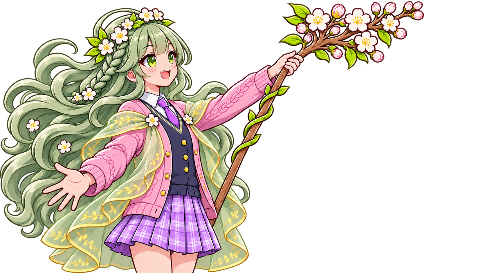
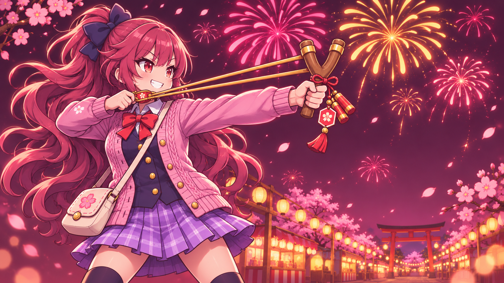
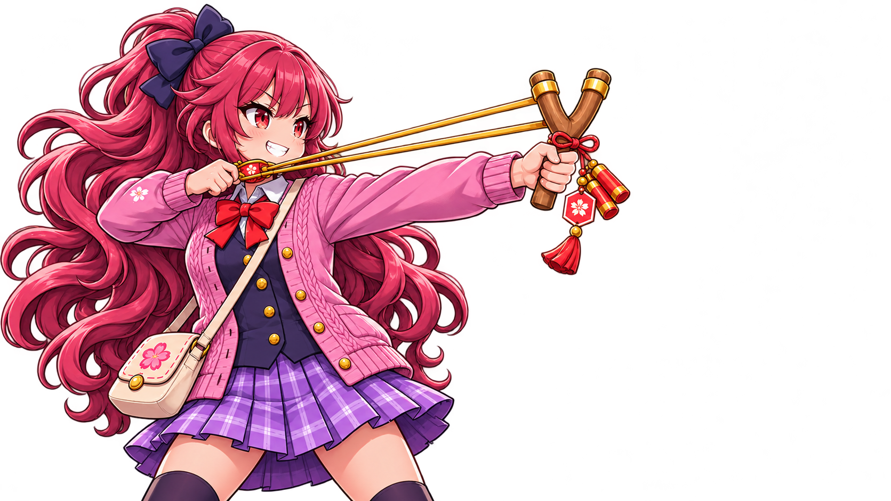

녹스 신화 · 무지개
궁극기 컷인
- 새 그림은 일반 비율이라 띠(높이 290px) 안에 머리부터 허리까지, 망토와 창이 함께 들어옵니다. 얼굴은 지금(SD)보다 작게 보입니다.
- 파일만 바꿔 넣으면(게임의 얼굴 점 그대로) 얼굴이 띠 위쪽 1/4쯤에 붙고 왕관과 정수리가 띠 위로 잘립니다. 지금 그림의 얼굴 점이 SD 얼굴에 맞춰져 있어서입니다. 아래 「참고」는 얼굴 점만 새 그림에 맞춘 배치로, 왕관까지 다 들어옵니다.
- 창 끝 수정은 사선 글자 판 가장자리에 걸쳐 반쯤 보입니다(지금 그림도 같은 자리).


0.12초 (열리며 번쩍)0.3초0.55초접히는 순간
지금


새 그림


참고 · 얼굴 점만 새 그림에 맞춘 배치 (캡처 스크립트에서 조정)
컷인의 그림 자리는 그림마다 잰 얼굴 점(Cutin.FACE)으로 정합니다. 녹스의 지금 값 (0.30, 0.37)을 새 그림에 맞춘 (0.292, 0.258)로만 바꿨고, 크기 · 움직임 규칙은 게임 그대로입니다. 새 그림을 실제로 넣는다면 이 값도 같이 다시 재야 합니다.

얼굴 점 맞춤


픽업 소환 가정 화면
- 게임은 SS만 픽업으로 돌립니다. 신화인 녹스는 실제로는 픽업이 될 수 없어서, 이번 주 픽업 순번만 실행 중에 녹스로 돌려 「만약 픽업이라면」 화면을 그렸습니다. 꼬리표 · 이름은 진짜 데이터(신화 · 무지개 이름)이고, 「SS가 나오면 50% 녹스」 문구는 SS 픽업용 문구 그대로라 신화와는 맞지 않습니다.
- 새 그림: 얼굴 · 왕관 · 창 · 무지개 망토가 화면 왼쪽 절반에 다 들어와 무대가 꽉 찹니다. 이름 띠가 망토 · 몸통을 덮지만 얼굴은 가리지 않습니다.
- 왕관 끝은 화면 위에 걸려 잘립니다(지금 그림도 같음). 1600에서는 그림이 더 커져 위가 조금 더 잘립니다.


아이 정보창
- 새 그림: 얼굴이 금빛 「성장 10」 원 오른쪽에 깨끗이 보이고, 망토 · 카디건 · 치마까지 전신에 가깝게 보입니다.
- 왕관 끝이 「성장 10」 원 뒤에 일부 가리고, 창의 수정 날은 오른쪽 크림 판 뒤에 가려 안 보입니다(지금 그림도 같은 자리라 같은 문제).


플로라 SS · 생명
궁극기 컷인
- 파일만 바꿔 넣은 배치 그대로 잘 맞습니다: 꽃 머리장식부터 가슴까지, 꽃가지(무기)도 띠 안에 보입니다. 얼굴은 지금(SD)보다 작습니다.


0.12초 (열리며 번쩍)0.3초0.55초접히는 순간
지금


새 그림


픽업 소환 실제 픽업 대상
- 새 그림(밝은 봄 아침판)은 무대 전체가 훨씬 화사합니다. 오른쪽 위 지갑 · 남은 시간 판, 아래 소환 버튼 글자는 밝은 하늘 위에서도 읽힙니다.
- 이름 띠 「플로라」가 카디건 · 치마를 덮지만 얼굴 · 꽃관 · 꽃가지는 가리지 않습니다.


아이 정보창
- 얼굴 · 꽃관 · 땋은 머리가 온전히 보이고 전신에 가깝게 서 있습니다.
- 꽃가지 끝은 오른쪽 크림 판 뒤로 갑니다(지금 그림도 같음).


카렌 S · 불꽃
궁극기 컷인
- 파일만 바꿔 넣은 배치로 새총 Y와 장식 술까지 띠 안에 다 보입니다 — 지금 그림보다 무기가 잘 드러납니다. 리본 위 끝만 띠 위로 살짝 잘립니다.
- 얼굴은 지금(SD)보다 작고, 긴 머리 · 카디건 · 가방끈까지 보입니다.


0.12초 (열리며 번쩍)0.3초0.55초접히는 순간
지금


새 그림


픽업 소환 가정 화면
- 카렌은 S라 실제로는 픽업이 될 수 없습니다. 녹스처럼 픽업 순번만 실행 중에 돌린 「만약 픽업이라면」 화면입니다(꼬리표 S · 문구는 SS 픽업용 그대로).
- 새 그림: 웃는 얼굴 · 새총 · 불꽃놀이 · 축제 거리가 무대를 채워 지금보다 화려합니다. 이름 띠가 치마 · 가방을 덮지만 얼굴은 가리지 않습니다.
- 이름 「카렌」은 S 등급 글자색(남색)이라 보라 띠 위에서 잘 안 읽힙니다 — 그림과 상관없이 지금 그림에서도 같습니다(S가 픽업 화면에 설 일이 없어 생기는 모습).


아이 정보창
- 얼굴 · 리본 · 새총을 당기는 자세가 잘 보이고, 뒤로 축제 거리 등불이 보입니다.
- 머리 리본이 「성장 10」 원 뒤에 일부 가리고, 새총 Y의 오른쪽 끝은 크림 판 가장자리에서 잘립니다(지금 그림도 Y가 판 가장자리에 걸림).


찍은 방법 · 실행 중에만 바꾼 것
- 늦은 계정 저장(STAGE 33 · 항해사 Lv.22)에서 녹스 · 플로라 · 카렌을 합류시켜(별 2 · 성장 Lv.10) 정보창이 실루엣이 아니게 했습니다.
- 픽업:
GameData.pickup_id()는 SS만 7일마다 돌립니다. 아이 목록 뒤에 「등급만 SS로 바꾼 그 아이 사본」을 붙여 이번 주 순번이 그 아이에 걸리게 하고, 화면을 그린 직후 원래 목록으로 되돌렸습니다. 화면의 등급 · 이름 · 색은 진짜 데이터입니다(플로라도 날짜와 상관없이 같은 방법). - 새 그림은 화면에서 원래 그림을 쓰는 곳(그림 칸 · 셰이더 매개변수)을 모두 찾아 바꿔 끼웠습니다. 픽업 왼쪽 물방울(얼굴 동그라미)은 그림마다 잰 얼굴 칸으로 자르기 때문에, 새 그림에서는 새 그림에서 잰 얼굴 칸으로 잘랐습니다(안 그러면 옛 얼굴 자리 = 엉뚱한 곳이 보임).
- 정보창: 그림이 일꾼 스레드에서 불러진 뒤 바꿔 끼웠고, 자르기는 게임 그대로(모든 아이 공통)입니다.
- 궁극기 컷인: 갑판에 그 아이를 세우고 실제 궁극기 경로(
main.request_ult)로 띄웠습니다. 「새 그림」은 배경 없는 판(_cut)을 넣고 게임 규칙(Cutin._frame)과 게임의 얼굴 점 그대로 다시 배치한 것 = 파일만 바꿔 넣었을 때와 같은 화면입니다. 녹스만 「참고」로 얼굴 점을 새 그림에 맞춘 판을 더 붙였습니다. - 컷인을 찍는 동안만 적 체력을 크게 늘리고 새 의뢰 카드 알림을 닫았습니다(늦은 계정 덱이 적을 순식간에 쓰러뜨려 정화 전환 중에는 궁극기가 거절되고, 의뢰 카드는 어느 한쪽 캡처에만 떠서). 그림 배치와는 상관없습니다.
- 새 배경 없는 판 세 장은 진짜 투명 배경(RGBA)이고 어두운 바탕에 얹어 봐도 흰 테두리가 없어 따로 지우지 않았습니다.
새 그림 원본 AI 생성 (OpenAI GPT Image 2) · 비교용 · 게임에 없음
위: 배경 있는 그림(픽업 · 정보창에 쓰는 _cutin 자리) · 아래 줄 바둑판 바탕: 배경 없는 판(컷인에 쓰는 _cutin_cut 자리). 모두 1672×941(카렌 · 플로라 배경 없는 판은 1671×941).





